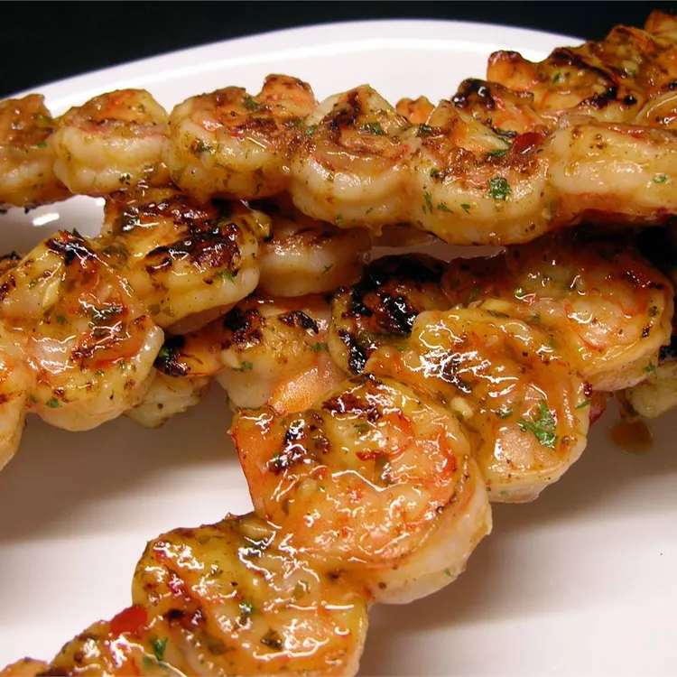

Spicy Grilled Shrimp

Description
This amazing spicy grilled shrmip recipe will make you lick your fingers (allrecipes.com, 2026).
Ingredients
- ⅓ cup olive oil
- ¼ cup sesame oil
- ¼ cup chopped fresh parsley
- 2 tablespoons hot sauce
- 2 tablespoons minced garlic
- 1 tablespoon ketchup
- 1 tablespoon Asian chile paste
- 1 teaspoon salt
- 1 teaspoon black pepper
- 3 tablespoons lemon juice
- 2 pounds large shrimp, peeled and deveined
- 12 wooden skewers, soaked in water
Steps
-
Whisk together the olive oil, sesame oil, parsley, hot sauce, minced garlic, ketchup, chile sauce, salt, pepper, and lemon juice in a mixing bowl.
Set aside about 1/3 of this marinade to use while grilling.
-
Place the shrimp in a large, resealable plastic bag.
Pour in the remaining marinade and seal the bag.
Refrigerate for 2 hours.
-
Preheat an outdoor grill for high heat.
Thread shrimp onto skewers, piercing once near the tail and once near the head.
Discard marinade.
-
Lightly oil grill grate. Cook shrimp for 2 minutes per side until opaque, basting frequently with reserved marinade.
Return to Home